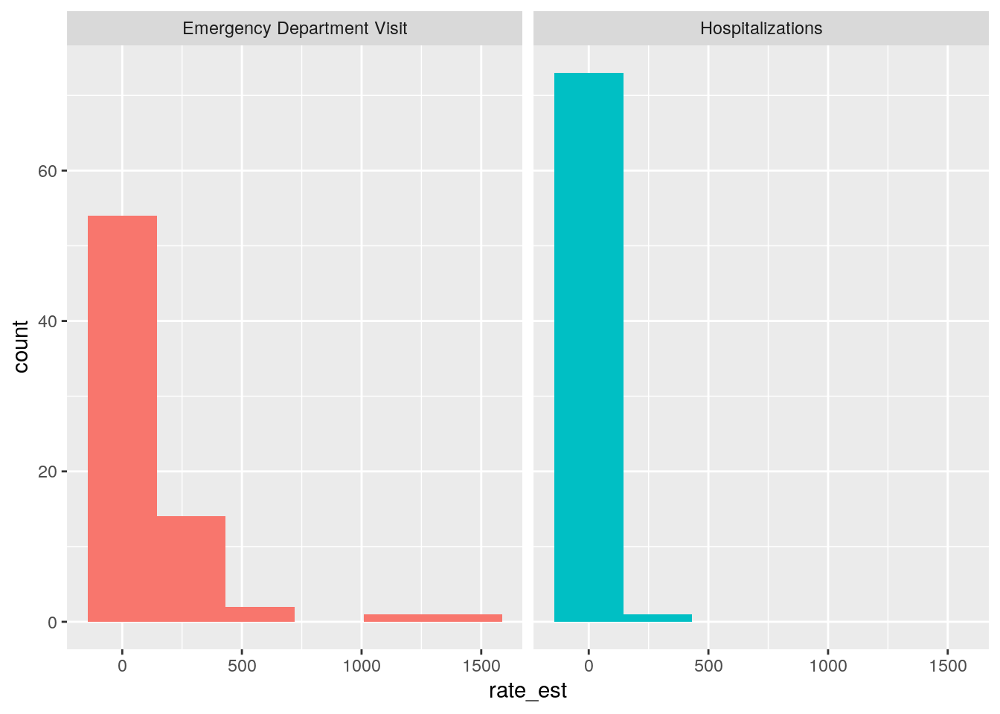
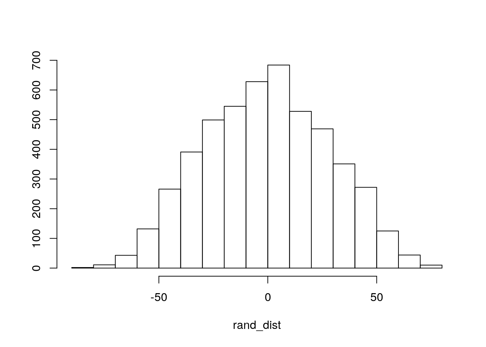
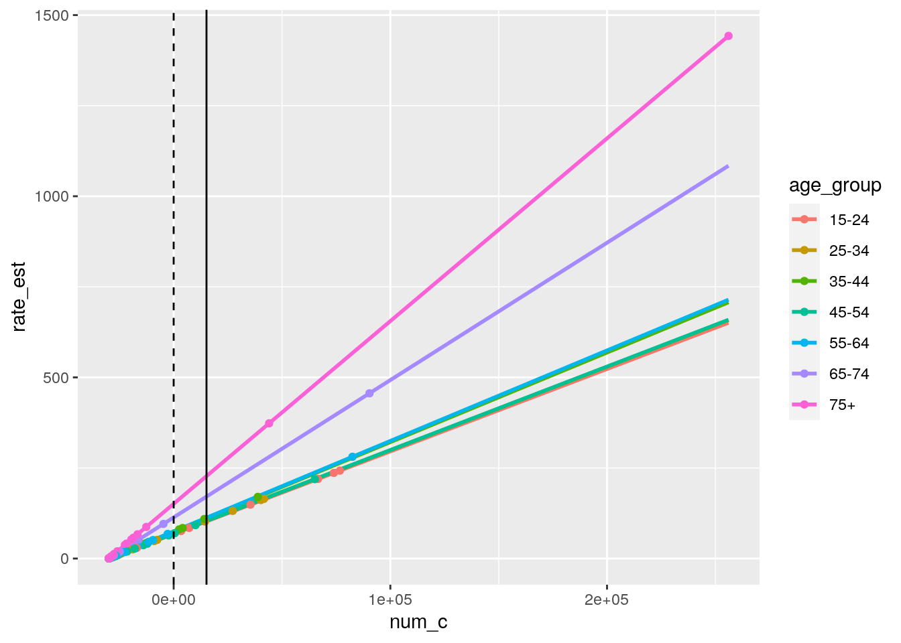
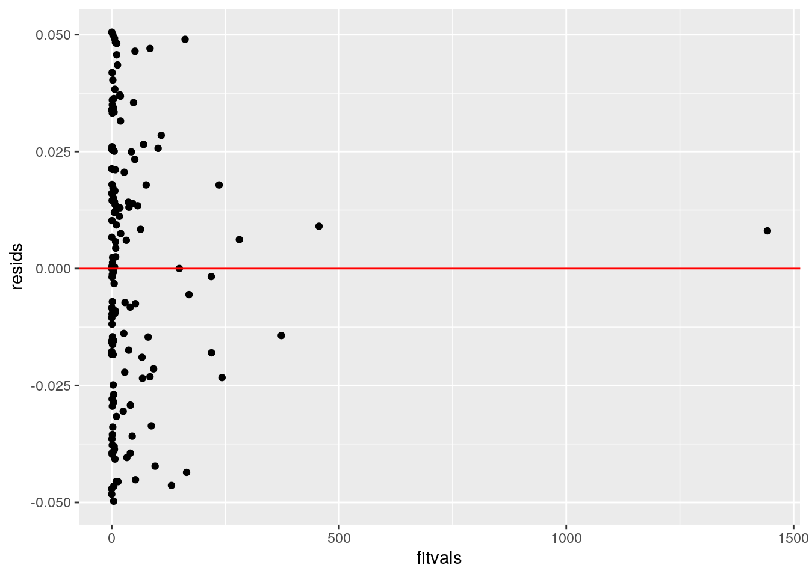
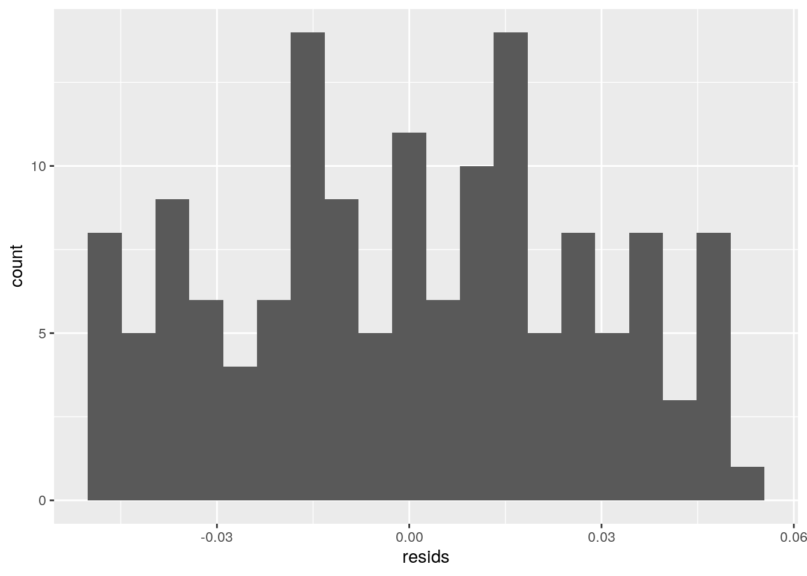
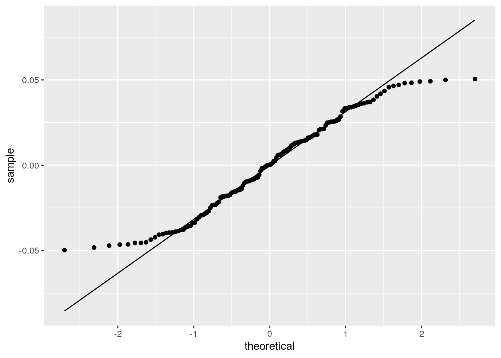
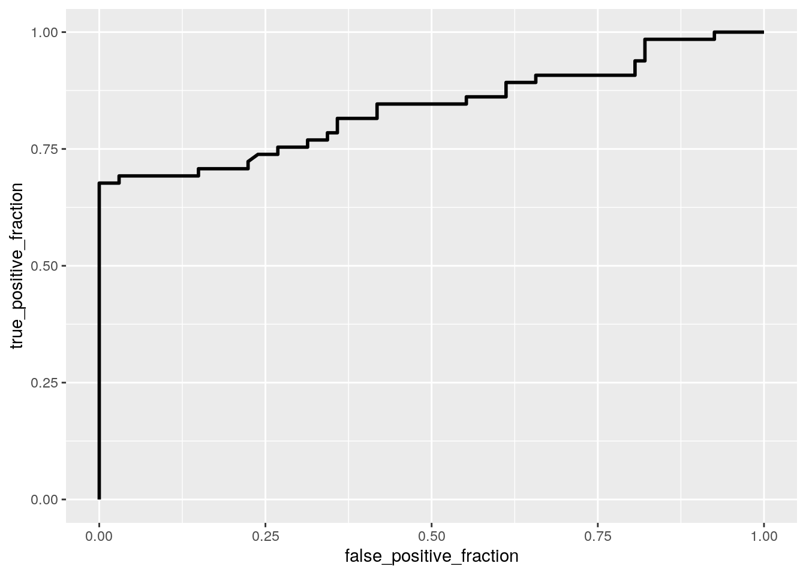
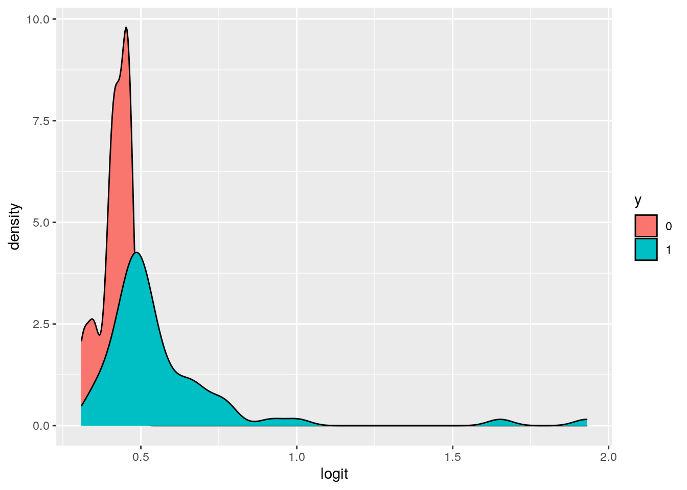
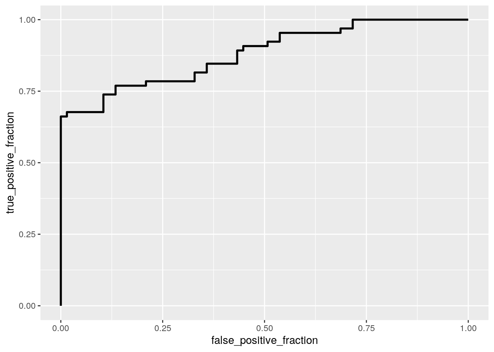

This dataset looks at data collection from the CDC on traumatic brain injuries. The variables include age group of those injured, type of measure(from emergency visit, death, or hospitalization), mechanism of injury(accidental fall, assault, etc.), estimated number of cases in 2014, and estimated rate / 100,000 cases in 2014. There are a total of 231 observations.
head(tbi_age)## # A tibble: 6 x 5
## age_group type injury_mechanism number_est rate_est
## <chr> <chr> <chr> <dbl> <dbl>
## 1 0-17 Emergency Depar… Motor Vehicle Crashes 47138 64.1
## 2 0-17 Emergency Depar… Unintentional Falls 397190 540.
## 3 0-17 Emergency Depar… Unintentionally struck by or a… 229236 312.
## 4 0-17 Emergency Depar… Other unintentional injury, me… 55785 75.8
## 5 0-17 Emergency Depar… Intentional self-harm NA NA
## 6 0-17 Emergency Depar… Assault 24360 33.1I limited the data to not include data from “total” age since that is a combination of all the other age groups already represented. From there, I looked for a significant mean difference in rate and number of injuries for the different mechanisms of injury. This does not take into consideration the age group of the injured or the result of the injury (death, hospitalization, or emergency department visit)
H0: For both estimated rate and number of injuries, means for each mechanism of injury are equal
HA: For at least one DV, at least one mechanism of injury mean is different
The test showed significance (p = 0.0001572).
tbi_manova <- tbi_age %>% select(type, injury_mechanism, number_est, rate_est) %>% na.omit()
man1 <- manova(cbind(rate_est, number_est) ~ injury_mechanism, data = tbi_manova)
summary(man1)## Df Pillai approx F num Df den Df Pr(>F)
## injury_mechanism 6 0.16854 3.2668 12 426 0.0001572 ***
## Residuals 213
## ---
## Signif. codes: 0 '***' 0.001 '**' 0.01 '*' 0.05 '.' 0.1 ' ' 1summary.aov(man1)## Response rate_est :
## Df Sum Sq Mean Sq F value Pr(>F)
## injury_mechanism 6 732204 122034 6.6628 1.781e-06 ***
## Residuals 213 3901253 18316
## ---
## Signif. codes: 0 '***' 0.001 '**' 0.01 '*' 0.05 '.' 0.1 ' ' 1
##
## Response number_est :
## Df Sum Sq Mean Sq F value Pr(>F)
## injury_mechanism 6 1.8631e+11 3.1052e+10 3.265 0.00431 **
## Residuals 213 2.0257e+12 9.5105e+09
## ---
## Signif. codes: 0 '***' 0.001 '**' 0.01 '*' 0.05 '.' 0.1 ' ' 1Through performing one-way ANOVAs for each variable, we see that for both rate (p = 0.000001781) and number of injuries (p = 0.00431) at least one mechanism of injury mean significantly differs.
pairwise.t.test(tbi_manova$rate_est, tbi_manova$injury_mechanism, p.adj = "none")##
## Pairwise comparisons using t tests with pooled SD
##
## data: tbi_manova$rate_est and tbi_manova$injury_mechanism
##
## Assault Intentional self-harm
## Intentional self-harm 0.65 -
## Motor Vehicle Crashes 0.61 0.36
## Other or no mechanism specified 0.91 0.58
## Other unintentional injury, mechanism unspecified 1.00 0.65
## Unintentional Falls 1.6e-06 2.2e-06
## Unintentionally struck by or against an object 0.35 0.20
## Motor Vehicle Crashes
## Intentional self-harm -
## Motor Vehicle Crashes -
## Other or no mechanism specified 0.69
## Other unintentional injury, mechanism unspecified 0.61
## Unintentional Falls 1.5e-05
## Unintentionally struck by or against an object 0.67
## Other or no mechanism specified
## Intentional self-harm -
## Motor Vehicle Crashes -
## Other or no mechanism specified -
## Other unintentional injury, mechanism unspecified 0.91
## Unintentional Falls 2.7e-06
## Unintentionally struck by or against an object 0.41
## Other unintentional injury, mechanism unspecified
## Intentional self-harm -
## Motor Vehicle Crashes -
## Other or no mechanism specified -
## Other unintentional injury, mechanism unspecified -
## Unintentional Falls 1.6e-06
## Unintentionally struck by or against an object 0.35
## Unintentional Falls
## Intentional self-harm -
## Motor Vehicle Crashes -
## Other or no mechanism specified -
## Other unintentional injury, mechanism unspecified -
## Unintentional Falls -
## Unintentionally struck by or against an object 8.8e-05
##
## P value adjustment method: nonepairwise.t.test(tbi_manova$number_est, tbi_manova$injury_mechanism, p.adj = "none")##
## Pairwise comparisons using t tests with pooled SD
##
## data: tbi_manova$number_est and tbi_manova$injury_mechanism
##
## Assault Intentional self-harm
## Intentional self-harm 0.63238 -
## Motor Vehicle Crashes 0.64191 0.37148
## Other or no mechanism specified 0.98250 0.64640
## Other unintentional injury, mechanism unspecified 0.94694 0.67530
## Unintentional Falls 0.00088 0.00057
## Unintentionally struck by or against an object 0.43320 0.23877
## Motor Vehicle Crashes
## Intentional self-harm -
## Motor Vehicle Crashes -
## Other or no mechanism specified 0.62630
## Other unintentional injury, mechanism unspecified 0.59506
## Unintentional Falls 0.00402
## Unintentionally struck by or against an object 0.74965
## Other or no mechanism specified
## Intentional self-harm -
## Motor Vehicle Crashes -
## Other or no mechanism specified -
## Other unintentional injury, mechanism unspecified 0.96441
## Unintentional Falls 0.00082
## Unintentionally struck by or against an object 0.42047
## Other unintentional injury, mechanism unspecified
## Intentional self-harm -
## Motor Vehicle Crashes -
## Other or no mechanism specified -
## Other unintentional injury, mechanism unspecified -
## Unintentional Falls 0.00070
## Unintentionally struck by or against an object 0.39526
## Unintentional Falls
## Intentional self-harm -
## Motor Vehicle Crashes -
## Other or no mechanism specified -
## Other unintentional injury, mechanism unspecified -
## Unintentional Falls -
## Unintentionally struck by or against an object 0.01029
##
## P value adjustment method: noneThe total number of tests performed was 45 (1 MANOVA + 2 ANOVA + 42 pairwise t tests). With 45 tests, and if left unadjusted, the probability of at least one Type-1 error is 0.901 (1 - (0.95)^45 = 0.901). To account for this, the bonferroni corrected significance level is adjusted to 0.0011 (α = 0.05/45 = 0.0011).
With this adjustment, we see a significantly different rate of injury comparing Unintentional Falls against Assault, Intentional Self-Harm, Motor Vehicle Crashes, Other or no mechanism specified, Other unintentional injury/mechanism unspecified, and finally Unintentionally struck by or against an object.
We also see a significantly different number of injuries comparing Unintentional Falls against Assault, Intentional Self-Harm, Other or no mechanism specified, Other unintentional injury/mechanism unspecified, and Unintentionally struck by or against an object.
MANOVA assumes random samples, multivariate normality of DVs, homogeneity of within-group covariance matrices, linear relationships among DVs, no extreme univariate or multivariate outliers, and no multicollinearity. Because of the amount and the difficulty in meeting all assumptions, it is unlikely that this data meets all of these assumptions.
There are 3 different methods/departments in which a TBI diagnosis was made, Hospitalizations, ED Visits, and Deaths. Rate of TBI found from deaths is the lowest while rate seems to be much closer/ less distinguishable among hospitalizations and emergency department visits, possibly making it better to investigate here. This mean difference randomization test was performed to see whether traumatic brain injury rate is the same on average from hospitalizations and emergency department visits. This does not take into account the mechanism of injury or age group.
H0: Mean rate of traumatic brain injury is the same from hospitalizations and emergency department visits
HA: Mean rate of traumatic brain injury is different from hospitalizations and emergency department visits
set.seed(123)
tbi_rand <- tbi_age %>% filter(!type == "Deaths") %>% na.omit()
tbi_rand %>% group_by(type) %>%
summarize(means = mean(rate_est)) %>% summarize(`mean_diff`= diff(means))## `summarise()` ungrouping output (override with `.groups` argument)## # A tibble: 1 x 1
## mean_diff
## <dbl>
## 1 -122.rand_dist<-vector()
for(i in 1:5000){
new <- data.frame(rate = sample(tbi_rand$rate_est), type = sample(tbi_rand$type))
rand_dist[i]<-mean(new[new$type == "Emergency Department Visit",]$rate)-
mean(new[new$type == "Hospitalizations",]$rate)}
mean(rand_dist > 121.803 | rand_dist < -121.803)## [1] 0t.test(data = tbi_rand, rate_est~type)##
## Welch Two Sample t-test
##
## data: rate_est by type
## t = 4.4543, df = 76.319, p-value = 2.838e-05
## alternative hypothesis: true difference in means is not equal to 0
## 95 percent confidence interval:
## 67.3446 176.2621
## sample estimates:
## mean in group Emergency Department Visit
## 137.12361
## mean in group Hospitalizations
## 15.32027The p-value (p = 0) for the permutation test corresponds to the probability of observing a mean difference as extreme as the one we got under the randomization distribution, so we reject the null hypothesis that the mean rate of traumatic brain injury is the same from hospitalizations and emergency department visits. The Welch Two Sample t-test confirms this result (p = 0.0000284).
ggplot(tbi_rand, aes(rate_est, fill = type)) + geom_histogram(bins = 6.5) + facet_wrap(~type, ncol = 2) +
theme(legend.position ="none")
{hist(rand_dist,main="",ylab=""); abline(v = c(-121.8033, 121.8033),col="red")}
First I removed some of the age groups that overlapped, just to reduce the overall number of age groups and make interpreting everything a little easier. I also centered the numeric variable involved in the interaction. This model is looking at the Age Group and Number of Injuries with Interaction on Rate of Injury.
(some of the) Coefficient Interpretations: - predicted rate of injury for those aged 15-24 with average number of injuries is 68.168. - those aged 35-54 have a predicted rate of injury that is 5.919 higher than those with average number of injuries and that are aged 15-24. - those aged 75+ have a predicted rate of injury that is 82.924 higher than those with average number of injuries and that are aged 15-24. - for every 1-unit increase in number of injuries, predicted rate of injury goes up 0.0023 for this group - slope of number of injuries on rate of injury for people aged 65-74 is 0.0015 greater than for people aged 15-24 - slope of number of injuries on rate of injury for people aged 75+ is 0.0028 greater than for people aged 15-24
tbi_lm <- tbi_age %>% mutate(num_c = number_est - mean(number_est, na.rm = T)) %>% na.omit() %>% filter(!age_group == "Total", !age_group == "0-4", !age_group == "5-14", !age_group == "0-17")
fit1 <- lm(rate_est~age_group*num_c, data = tbi_lm)
summary(fit1)##
## Call:
## lm(formula = rate_est ~ age_group * num_c, data = tbi_lm)
##
## Residuals:
## Min 1Q Median 3Q Max
## -0.049739 -0.021445 0.000326 0.021121 0.050522
##
## Coefficients:
## Estimate Std. Error t value Pr(>|t|)
## (Intercept) 6.817e+01 6.460e-03 10552.48 <2e-16 ***
## age_group25-34 7.738e-01 9.884e-03 78.28 <2e-16 ***
## age_group35-44 5.919e+00 1.114e-02 531.41 <2e-16 ***
## age_group45-54 8.742e-01 1.037e-02 84.28 <2e-16 ***
## age_group55-64 6.668e+00 1.029e-02 648.01 <2e-16 ***
## age_group65-74 4.539e+01 1.037e-02 4378.14 <2e-16 ***
## age_group75+ 8.292e+01 9.194e-03 9019.81 <2e-16 ***
## num_c 2.275e-03 1.745e-07 13038.51 <2e-16 ***
## age_group25-34:num_c 2.561e-05 3.213e-07 79.72 <2e-16 ***
## age_group35-44:num_c 1.976e-04 3.920e-07 504.06 <2e-16 ***
## age_group45-54:num_c 2.898e-05 3.409e-07 85.00 <2e-16 ***
## age_group55-64:num_c 2.224e-04 3.178e-07 699.91 <2e-16 ***
## age_group65-74:num_c 1.515e-03 3.052e-07 4965.45 <2e-16 ***
## age_group75+:num_c 2.768e-03 2.030e-07 13635.85 <2e-16 ***
## ---
## Signif. codes: 0 '***' 0.001 '**' 0.01 '*' 0.05 '.' 0.1 ' ' 1
##
## Residual standard error: 0.02903 on 131 degrees of freedom
## Multiple R-squared: 1, Adjusted R-squared: 1
## F-statistic: 2.436e+08 on 13 and 131 DF, p-value: < 2.2e-16“All” of the variance in the outcome is explained by the model (R^2 = 1). It is actually slightly less than one (1 - 0.00000004136915), but even with the exact number, essentially all of the variance is explained by the model.
SST <- sum((tbi_lm$rate_est-mean(tbi_lm$rate_est))^2)
SSR <- sum((fit1$fitted.values-mean(tbi_lm$rate_est))^2)
SSE <- sum(fit1$residuals^2)
SSR/SST## [1] 1SSE/SST## [1] 4.136915e-08ggplot(tbi_lm, aes(num_c,rate_est, color = age_group)) + geom_smooth(method = "lm", se = F, fullrange = T) +
geom_point() + geom_vline(xintercept=0,lty=2) + geom_vline(xintercept = mean(tbi_lm$number_est))## `geom_smooth()` using formula 'y ~ x'
Due to the outliers it’s kind of difficult to get the full picture but there doesn’t appear to be heteroscedasticity or any non-linear relationship. Looking at the histogram there seems to be some aspects of normality, but through using the Shapiro-Wilk normality test we see that the null hypothesis of normality is rejected (p = 0.0015).
resids<-fit1$residuals
fitvals<-fit1$fitted.values
ggplot()+geom_point(aes(fitvals,resids))+geom_hline(yintercept=0, color='red')
ggplot()+geom_histogram(aes(resids), bins=20)
ggplot()+geom_qq(aes(sample=resids))+geom_qq_line(aes(sample=resids))
shapiro.test(resids)##
## Shapiro-Wilk normality test
##
## data: resids
## W = 0.96722, p-value = 0.001519Using the robust standard errors, everything is still significant. Some of the SE values changed, but largely everything is basically all of the values and the relationships are the same. Any changes made, though minimal, are likely to help robust any violations of homoskedasticity.
coeftest(fit1, vcov = vcovHC(fit1))##
## t test of coefficients:
##
## Estimate Std. Error t value Pr(>|t|)
## (Intercept) 6.8168e+01 6.6776e-03 10208.432 < 2.2e-16 ***
## age_group25-34 7.7376e-01 1.5388e-02 50.282 < 2.2e-16 ***
## age_group35-44 5.9191e+00 9.8570e-03 600.497 < 2.2e-16 ***
## age_group45-54 8.7416e-01 8.5674e-03 102.034 < 2.2e-16 ***
## age_group55-64 6.6682e+00 1.5157e-02 439.953 < 2.2e-16 ***
## age_group65-74 4.5387e+01 3.6120e-02 1256.545 < 2.2e-16 ***
## age_group75+ 8.2924e+01 1.4054e-02 5900.248 < 2.2e-16 ***
## num_c 2.2753e-03 1.7144e-07 13271.266 < 2.2e-16 ***
## age_group25-34:num_c 2.5613e-05 5.5160e-07 46.435 < 2.2e-16 ***
## age_group35-44:num_c 1.9759e-04 3.2945e-07 599.744 < 2.2e-16 ***
## age_group45-54:num_c 2.8975e-05 2.3207e-07 124.853 < 2.2e-16 ***
## age_group55-64:num_c 2.2241e-04 5.6313e-07 394.958 < 2.2e-16 ***
## age_group65-74:num_c 1.5153e-03 1.3870e-06 1092.433 < 2.2e-16 ***
## age_group75+:num_c 2.7679e-03 4.7625e-07 5811.759 < 2.2e-16 ***
## ---
## Signif. codes: 0 '***' 0.001 '**' 0.01 '*' 0.05 '.' 0.1 ' ' 1The bootstrapped SEs are overall slightly larger than the previous SEs. This effect will make the p-values smaller and increase the significance. In practice we would probably choose to use these values over the original.
set.seed(123)
samp_distn<-replicate(5000, {
boot_dat <- sample_frac(tbi_lm, replace=T)
fit2 <- lm(rate_est~age_group*num_c, data = boot_dat)
coef(fit2)
})
samp_distn %>% t %>% as.data.frame %>% summarize_all(sd)## (Intercept) age_group25-34 age_group35-44 age_group45-54 age_group55-64
## 1 0.008577101 0.01553092 0.01410346 0.01300265 0.01765552
## age_group65-74 age_group75+ num_c age_group25-34:num_c
## 1 0.02667305 0.02866639 2.656531e-07 5.496201e-07
## age_group35-44:num_c age_group45-54:num_c age_group55-64:num_c
## 1 5.026481e-07 4.625105e-07 6.609503e-07
## age_group65-74:num_c age_group75+:num_c
## 1 9.763667e-07 1.080391e-06(some of the) Coefficient Interpretations: - controlling for rate of injury, none of the age groups significantly differ in whether the injury was reported from death or ED visit. - controlling for age group, for every 1-unit increase in rate of injury, odds of report from ED visit over report from death change by a factor of (e^0.00112325) = 1.00112. - odds of report from ED visit in those aged 55-64 are 1.064 times higher than those aged 0-17 - odds of report from ED visit in those aged 25-34 are 1.051 times higher than those aged 0-17
tbi_glm <- tbi_age %>% filter(!type == "Hospitalizations", !age_group == "Total") %>% mutate(y = ifelse(type == "Emergency Department Visit", 1, 0)) %>% na.omit %>%
mutate(rate_c = rate_est - mean(rate_est, na.rm = T))
fit3 <- glm(y~age_group + rate_c, data = tbi_glm)
coeftest(fit3)##
## z test of coefficients:
##
## Estimate Std. Error z value Pr(>|z|)
## (Intercept) 0.47533624 0.13863097 3.4288 0.0006063 ***
## age_group0-4 -0.04830893 0.19618251 -0.2462 0.8054927
## age_group15-24 0.02133632 0.18884149 0.1130 0.9100422
## age_group25-34 0.04927305 0.18907736 0.2606 0.7944031
## age_group35-44 0.05996796 0.18921692 0.3169 0.7512990
## age_group45-54 0.06013645 0.18921934 0.3178 0.7506265
## age_group5-14 0.02611547 0.19599218 0.1332 0.8939976
## age_group55-64 0.06230271 0.18925101 0.3292 0.7419994
## age_group65-74 0.00853910 0.19236867 0.0444 0.9645941
## age_group75+ -0.08702320 0.19238619 -0.4523 0.6510269
## rate_c 0.00112325 0.00023878 4.7041 2.549e-06 ***
## ---
## Signif. codes: 0 '***' 0.001 '**' 0.01 '*' 0.05 '.' 0.1 ' ' 1Accuracy (proportion of correctly classified cases) = (67 + 34)/ 132 = 0.765
Sensitivity/TPR (proportion ED visits correctly classified) = 34/65 = 0.523
Specificity/TNR (proportion of deaths correctly classified) = 67/67 = 1
Precision/PPV (proportion of malignancies correctly classified) = 34/34 = 1
probs <- predict(fit3, type = "response")
table(predict = as.numeric(probs > .5), truth = tbi_glm$y) %>% addmargins## truth
## predict 0 1 Sum
## 0 67 31 98
## 1 0 34 34
## Sum 67 65 132The area under the curve depicts how well we are predicting overall. From both looking at the curve and the calculated AUC value (0.838) this model is predicting at a level of “Good”! The ROC curve also allows us to visualize trade-off between sensitivity and specificity in a way that Accuracy does not always capture as accurately.
ROCplot <- ggplot(tbi_glm) + geom_roc(aes(d=y, m=probs), n.cuts=0)
ROCplot
calc_auc(ROCplot)## PANEL group AUC
## 1 1 -1 0.8377727tbi_glm$logit<-predict(fit3,type="link")
tbi_glm %>% mutate(y=as.factor(y)) %>% ggplot() + geom_density(aes(logit, fill=y))
tbi <- tbi_glm %>% select(!rate_est) %>% select(!logit) %>% select(!type)
fit4 <- glm(y~., data = tbi)
coeftest(fit4)##
## z test of coefficients:
##
## Estimate
## (Intercept) 2.1851e-01
## age_group0-4 2.2341e-01
## age_group15-24 1.9017e-01
## age_group25-34 2.5069e-01
## age_group35-44 2.7946e-01
## age_group45-54 2.7357e-01
## age_group5-14 2.1431e-01
## age_group55-64 2.8482e-01
## age_group65-74 2.5590e-01
## age_group75+ 1.8308e-01
## injury_mechanismIntentional self-harm -6.1706e-02
## injury_mechanismMotor Vehicle Crashes -4.1274e-02
## injury_mechanismOther or no mechanism specified 1.8784e-03
## injury_mechanismOther unintentional injury, mechanism unspecified 4.1889e-03
## injury_mechanismUnintentional Falls -3.7455e-01
## injury_mechanismUnintentionally struck by or against an object -1.1461e-01
## number_est 5.4442e-06
## rate_c -1.2478e-05
## Std. Error
## (Intercept) 1.8550e-01
## age_group0-4 2.0377e-01
## age_group15-24 1.8728e-01
## age_group25-34 1.8939e-01
## age_group35-44 1.9079e-01
## age_group45-54 1.9029e-01
## age_group5-14 1.9423e-01
## age_group55-64 1.9103e-01
## age_group65-74 1.9575e-01
## age_group75+ 2.0055e-01
## injury_mechanismIntentional self-harm 1.7027e-01
## injury_mechanismMotor Vehicle Crashes 1.4521e-01
## injury_mechanismOther or no mechanism specified 1.4508e-01
## injury_mechanismOther unintentional injury, mechanism unspecified 1.4507e-01
## injury_mechanismUnintentional Falls 1.5698e-01
## injury_mechanismUnintentionally struck by or against an object 1.4619e-01
## number_est 1.5296e-06
## rate_c 4.6902e-04
## z value
## (Intercept) 1.1779
## age_group0-4 1.0964
## age_group15-24 1.0155
## age_group25-34 1.3236
## age_group35-44 1.4647
## age_group45-54 1.4377
## age_group5-14 1.1034
## age_group55-64 1.4909
## age_group65-74 1.3073
## age_group75+ 0.9129
## injury_mechanismIntentional self-harm -0.3624
## injury_mechanismMotor Vehicle Crashes -0.2842
## injury_mechanismOther or no mechanism specified 0.0129
## injury_mechanismOther unintentional injury, mechanism unspecified 0.0289
## injury_mechanismUnintentional Falls -2.3859
## injury_mechanismUnintentionally struck by or against an object -0.7840
## number_est 3.5592
## rate_c -0.0266
## Pr(>|z|)
## (Intercept) 0.238819
## age_group0-4 0.272893
## age_group15-24 0.309889
## age_group25-34 0.185623
## age_group35-44 0.142994
## age_group45-54 0.150531
## age_group5-14 0.269854
## age_group55-64 0.135977
## age_group65-74 0.191105
## age_group75+ 0.361282
## injury_mechanismIntentional self-harm 0.717054
## injury_mechanismMotor Vehicle Crashes 0.776222
## injury_mechanismOther or no mechanism specified 0.989670
## injury_mechanismOther unintentional injury, mechanism unspecified 0.976964
## injury_mechanismUnintentional Falls 0.017035 *
## injury_mechanismUnintentionally struck by or against an object 0.433050
## number_est 0.000372 ***
## rate_c 0.978775
## ---
## Signif. codes: 0 '***' 0.001 '**' 0.01 '*' 0.05 '.' 0.1 ' ' 1Accuracy (proportion of correctly classified cases) = (60 + 45)/ 132 = 0.795
Sensitivity/TPR (proportion ED visits correctly classified) = 45/65 = 0.692
Specificity/TNR (proportion of deaths correctly classified) = 60/67 = 0.896
Precision/PPV (proportion of malignancies correctly classified) = 45/52 = 0.865
The accuracy and sensitivity increased from the previous regression, while the specificity and the precision have decreased.
From both looking at the curve and the calculated value (0.881) this model is predicting at a “Good” level! This is slightly larger than from the previous regression.
probs2 <- predict(fit4, type = "response")
table(predict = as.numeric(probs2 > .5), truth = tbi$y) %>% addmargins## truth
## predict 0 1 Sum
## 0 60 20 80
## 1 7 45 52
## Sum 67 65 132ROCplot <- ggplot(tbi) + geom_roc(aes(d=y, m=probs2), n.cuts=0)
ROCplot
calc_auc(ROCplot)## PANEL group AUC
## 1 1 -1 0.8810563AUC = 0.993, this means that the model is predicting at the “Great” level. This is an improvement in predicting ability than the previous question.
set.seed(123)
k=10
data1<-tbi[sample(nrow(tbi)),]
folds<-cut(seq(1:nrow(tbi)),breaks=k,labels=F)
diags<-NULL
for(i in 1:k){
train<-data1[folds!=i,]
test<-data1[folds==i,]
truth<-test$y
fit4 <- glm(y~., data = tbi, family = "binomial")
probs<- predict(fit4, newdata=test, type="response")
diags<-rbind(diags,class_diag(probs,truth))
}## Warning: glm.fit: fitted probabilities numerically 0 or 1 occurred
## Warning: glm.fit: fitted probabilities numerically 0 or 1 occurred
## Warning: glm.fit: fitted probabilities numerically 0 or 1 occurred
## Warning: glm.fit: fitted probabilities numerically 0 or 1 occurred
## Warning: glm.fit: fitted probabilities numerically 0 or 1 occurred
## Warning: glm.fit: fitted probabilities numerically 0 or 1 occurred
## Warning: glm.fit: fitted probabilities numerically 0 or 1 occurred
## Warning: glm.fit: fitted probabilities numerically 0 or 1 occurred
## Warning: glm.fit: fitted probabilities numerically 0 or 1 occurred
## Warning: glm.fit: fitted probabilities numerically 0 or 1 occurredsummarize_all(diags,mean)## acc sens spec ppv auc
## 1 0.9247253 0.9218254 0.9532143 0.9333333 0.9927381The non-zero coefficient estimates are age groups 0-4, 15-24, 55-64, 65-74, 75+, and injury mechanisms intentional self harm, motor vehicle crashes, unintentional falls, unintentionally struck by or against an object, and then both number_est and rate_c.
set.seed(123)
y<-as.matrix(tbi$y)
x<-model.matrix(y~., data = tbi)[,-1]
cv<-cv.glmnet(x,y,family="binomial")
lasso<-glmnet(x,y,family="binomial",lambda=cv$lambda.1se)
coef(lasso)## 18 x 1 sparse Matrix of class "dgCMatrix"
## s0
## (Intercept) -0.6038275850
## age_group0-4 0.4501324183
## age_group15-24 -0.1124672242
## age_group25-34 .
## age_group35-44 .
## age_group45-54 .
## age_group5-14 .
## age_group55-64 0.1582576945
## age_group65-74 0.3780651853
## age_group75+ 0.1949927304
## injury_mechanismIntentional self-harm 0.8128623936
## injury_mechanismMotor Vehicle Crashes -0.0963816207
## injury_mechanismOther or no mechanism specified .
## injury_mechanismOther unintentional injury, mechanism unspecified .
## injury_mechanismUnintentional Falls -2.0280436378
## injury_mechanismUnintentionally struck by or against an object -0.3478108027
## number_est 0.0001364804
## rate_c 0.0150207790This AUC (0.971), is slightly lower than that of the other 10-fold CV, but this is still shows a “Great” level of prediction by this model. This AUC also still shows a greater predicting ability than all the other AUC values prior to the first 10-fold CV.
lasso_dat <- tbi %>% mutate(injury1 = ifelse(injury_mechanism == "Intentional self-harm", 1, 0)) %>%
mutate(injury2 = ifelse(injury_mechanism == "Motor Vehicle Crashes", 1, 0)) %>%
mutate(injury3 = ifelse(injury_mechanism == "Unintentional Falls", 1, 0)) %>%
mutate(injury4 = ifelse(injury_mechanism == "Unintentionally struck by or against an object", 1, 0)) %>%
mutate(age = ifelse(age_group == "0-4", 1, 0)) %>%
mutate(age2 = ifelse(age_group == "15-24", 1, 0)) %>%
mutate(age3 = ifelse(age_group == "55-64", 1, 0)) %>%
mutate(age4 = ifelse(age_group == "65-74", 1, 0)) %>%
mutate(age5 = ifelse(age_group == "75+", 1, 0)) %>% select(!age_group) %>% select(!injury_mechanism)
set.seed(123)
data1<-lasso_dat[sample(nrow(lasso_dat)),]
folds<-cut(seq(1:nrow(lasso_dat)),breaks=k,labels=F)
diags<-NULL
for(i in 1:k){
train<-data1[folds!=i,]
test<-data1[folds==i,]
truth<-test$y
fit <- glm(y~., data=train, family="binomial")
probs<- predict(fit, newdata=test, type="response")
diags<-rbind(diags,class_diag(probs,truth))
}## Warning: glm.fit: fitted probabilities numerically 0 or 1 occurred
## Warning: glm.fit: fitted probabilities numerically 0 or 1 occurred
## Warning: glm.fit: fitted probabilities numerically 0 or 1 occurred
## Warning: glm.fit: fitted probabilities numerically 0 or 1 occurred
## Warning: glm.fit: fitted probabilities numerically 0 or 1 occurred
## Warning: glm.fit: fitted probabilities numerically 0 or 1 occurred
## Warning: glm.fit: fitted probabilities numerically 0 or 1 occurred
## Warning: glm.fit: fitted probabilities numerically 0 or 1 occurred
## Warning: glm.fit: fitted probabilities numerically 0 or 1 occurred
## Warning: glm.fit: fitted probabilities numerically 0 or 1 occurredsummarize_all(diags,mean)## acc sens spec ppv auc
## 1 0.893956 0.8893254 0.9282143 0.9014286 0.970737